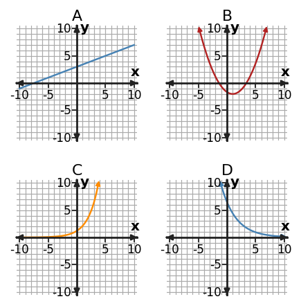

Algebra Practice 7.4 :::: Set 3
1. Graphs A, B, C, and D show different function-family behavior. Identify the linear graph, the quadratic graph, and the two exponential graphs. For one choice, explain the graph feature you used.

2. Use successive changes to classify the table as linear, quadratic, or exponential.
| x | y |
|---|---|
| 0 | 4 |
| 1 | 5 |
| 2 | 8 |
| 3 | 13 |
| 4 | 20 |
3. At the single input $x=5$, compare $L(x)=5x+6$, $Q(x)=x^2+4$, and $E(x)=3^x$. Which has the greatest output at this input? Explain why this one-input comparison alone does not prove which family grows fastest in the long run.
4. A student says the table is quadratic because the outputs do not stay equal. Critique the claim using successive-change evidence.
| x | y |
|---|---|
| 0 | 8 |
| 1 | 14 |
| 2 | 20 |
| 3 | 26 |
| 4 | 32 |
5. Match the table to the correct family—linear, quadratic, or exponential—and identify the decisive feature.
| x | y |
|---|---|
| 0 | 5 |
| 1 | 8 |
| 2 | 11 |
| 3 | 14 |
| 4 | 17 |
6. For nonnegative integer inputs, compare $L(x)=2x+9$ and $E(x)=2(2)^x$. Find the first integer input at which the exponential model has the larger output. Show enough values to justify that it is the first.
7. A taxi fare adds \$2.50 for each mile traveled. Which function family is the most natural model? Explain using the way the quantity changes.
8. Use both representations to classify the function family. Equation: $y=3x+2$.
| x | y |
|---|---|
| 0 | 2 |
| 1 | 5 |
| 2 | 8 |
| 3 | 11 |
9. Classify the relationship as linear, quadratic, or exponential. Support your choice using differences or ratios.
| x | y |
|---|---|
| 0 | 3 |
| 1 | 6 |
| 2 | 12 |
| 3 | 24 |
| 4 | 48 |
10. Classify $y=6 x - 1$ as linear, quadratic, or exponential. State the structural feature that identifies the family.
11. Sort Graphs A-D by behavior: constant additive change, turning-point behavior, multiplicative growth, and multiplicative decay.

12. Use successive changes to classify the table as linear, quadratic, or exponential.
| x | y |
|---|---|
| 0 | 5 |
| 1 | 15 |
| 2 | 45 |
| 3 | 135 |
| 4 | 405 |
13. At the single input $x=2$, compare $L(x)=2x+7$, $Q(x)=x^2+5$, and $E(x)=2^x$. Which has the greatest output at this input? Explain why this one-input comparison alone does not prove which family grows fastest in the long run.
14. A student says the table is exponential because the outputs increase by the same amount. Critique the claim using successive-change evidence.
| x | y |
|---|---|
| 0 | 9 |
| 1 | 16 |
| 2 | 23 |
| 3 | 30 |
| 4 | 37 |
15. Table C has outputs 1,4,9,16,25. Identify the family and cite the numerical or structural clue you used.
16. For nonnegative integer inputs, compare $L(x)=3x+10$ and $E(x)=3(3)^x$. Find the first integer input at which the exponential model has the larger output. Show enough values to justify that it is the first.
17. A ride service charges a starting fee of 8 dollars and then 6 dollars for each mile. Which function family best models total cost versus miles? Explain.
18. Use both representations to classify the function family. Equation: $y=x^2+3$.
| x | y |
|---|---|
| 0 | 3 |
| 1 | 4 |
| 2 | 7 |
| 3 | 12 |
19. Choose an efficient method—factoring, completing the square, or quadratic formula—to solve $x^2+6x+2=0$. Solve and briefly justify your method choice.
20. For $\displaystyle x^{2} - 8 x + 11=0$, compare completing the square with the quadratic formula. Which is more efficient here, and why? Then solve.
21. Inspect $\displaystyle 16 x^{2} - 16=0$. Identify the structural clue that suggests a fast solving method, then solve.
22. For $f(x)=2 x^{2} - 4 x + 3$ in standard form, identify the $y$-intercept directly from the form.
23. Rewrite $$x^2-4x+3$$ in factored form. Then state what feature becomes easier to read from the new form.
24. A problem asks for the maximum or minimum value and where it occurs. Which quadratic form would you prefer to use first, and why?